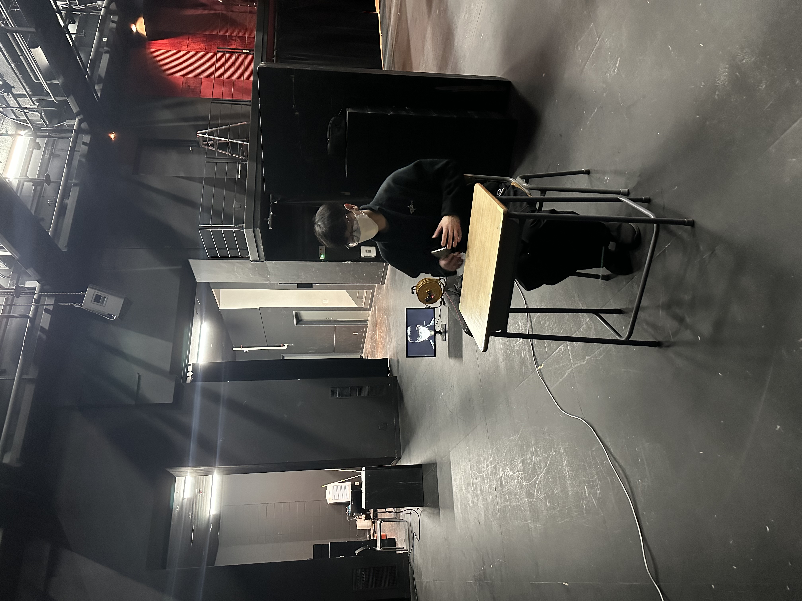
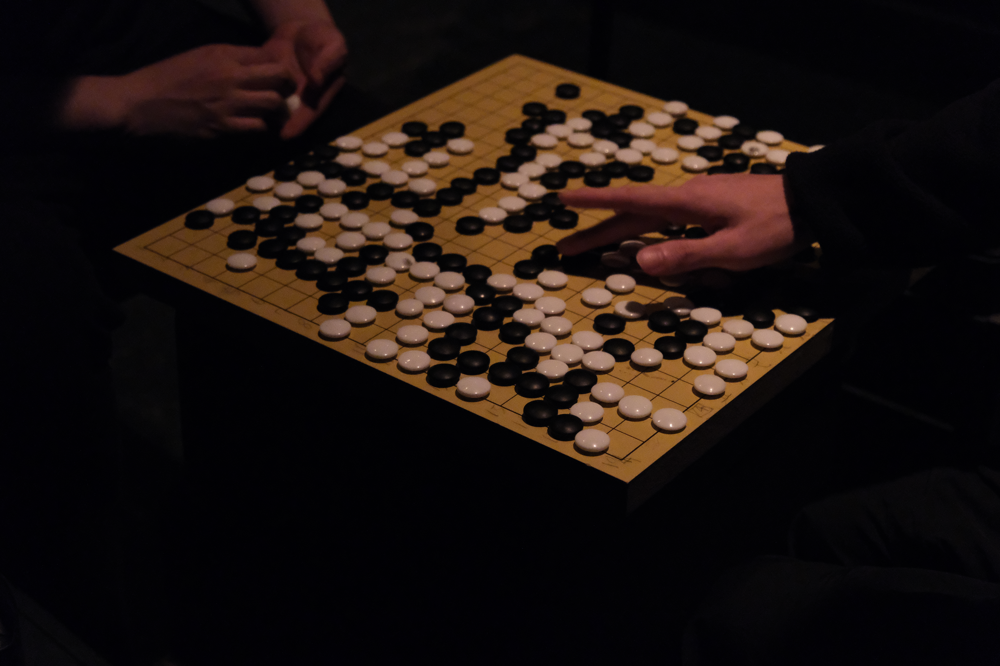
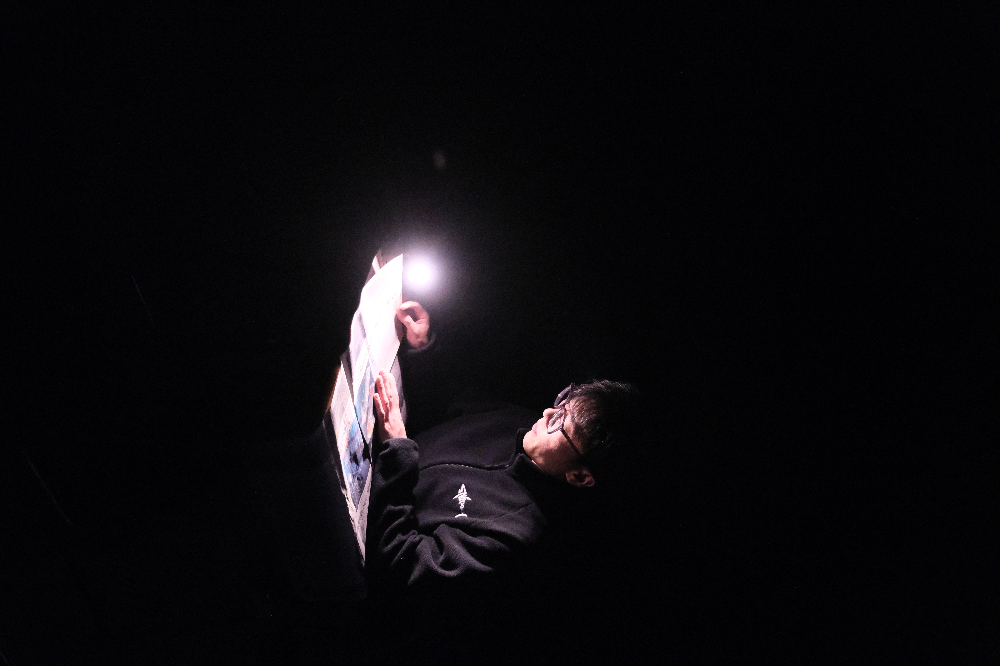

[12:30] 퍼포먼스는 약 30분 정도 지체되어 시작했다. 시작과 동시에 카메라의 배터리가 방전되었으나 퍼포먼스는 진행되었다.
[13:00] 두 명의 남학생들, 대학신문의 기자를 포함한 관객들이 오고갔다. 퍼포머는 이때를 생각보다 신문의 텍스트가 많았다고 회상하며, 감정이 올라와 눈물을 흘렸다고 전했다.
[15:00] 휴식을 끝낸 퍼포머는 극장으로 다시 돌아왔다. 쉬지 않고 텍스트를 읽다보니 목이 타고 어둠과 스피커에서 나오는 소리로 인해 머리가 아프다고 두통을 호소했다.
인문소극장 사무실에서 극장으로 돌아온 그의 손에는 바둑알과 바둑판이 들려있었다.
인문소극장 사무실에서 극장으로 돌아온 그의 손에는 바둑알과 바둑판이 들려있었다.

[15:30] 퍼포머는 공간을 이동하여 음향감독과 함께 무대 소대로 들어가 바둑을 두기 시작했다. 이제 기사를 읽는 소리가 아닌 바둑돌을 두는 소리가 극장을 채웠다.
[16:00] 바둑을 두던 퍼포머는 극장을 빠져나와 30분간 휴식을 청했다. 처음 두 판까지는 재미가 있었으나 그 이후로는 마찬가지의 피로감을 느꼈다고 한다.
[16:30] 극장으로 돌아온 퍼포머, 퍼포머와의 거리에 따라 달라지는 소리와 시각 정보를 본 공간에서 체험 할 수 있다.
[19:00] 저녁 식사 후 극장으로 돌아온 퍼포머, 대학신문의 기자와의 인터뷰 후 다시 극장으로 들어갔다.
그가 신문을 읽는 모습은 유선으로 모니터에 송출되었다.
그가 신문을 읽는 모습은 유선으로 모니터에 송출되었다.

[19:30] 퍼포머는 마지막으로 신문을 낭독했다. 오후 8시가 되기 조금 전, 극장에서 빠져 나온 그는 철거하자는 의사를 밝혔다.
무대의 완전한 철거까지는 약 1시간이 소요되었다.
무대의 완전한 철거까지는 약 1시간이 소요되었다.